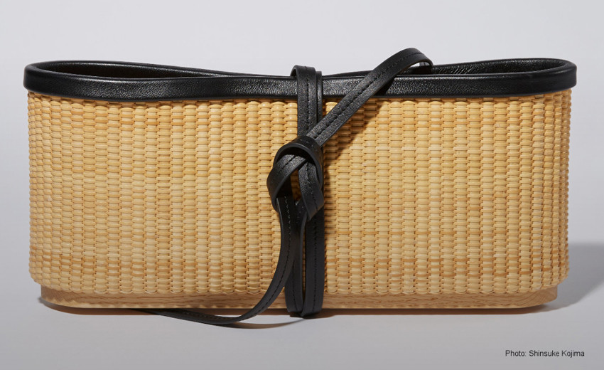
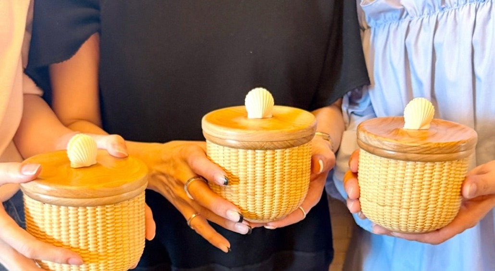
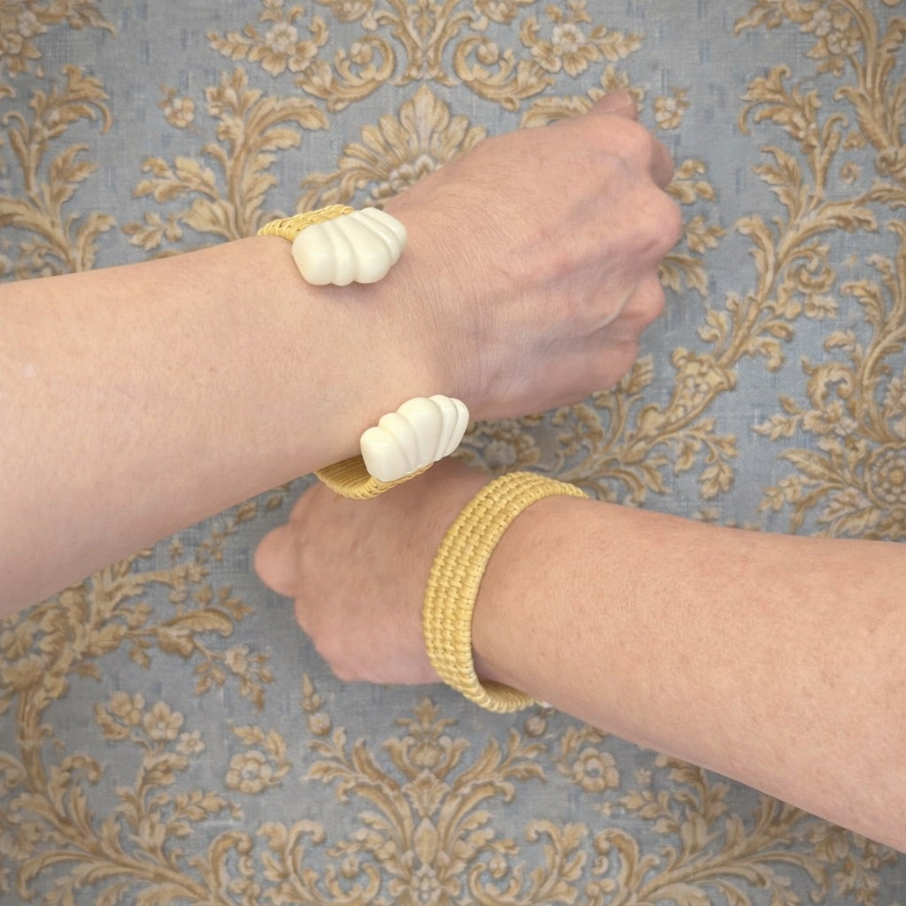
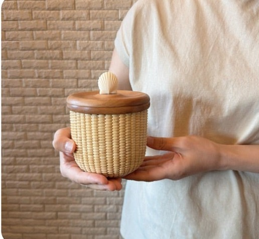
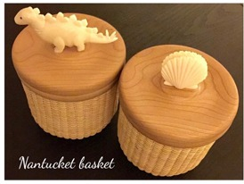

Nantucket Basket Atelier
一生を、
共にする籠。
TRINITY — FUKUOKA
ナンタケットバスケットは、19世紀アメリカ・ナンタケット島で
灯台船の船員たちが編み始めた籠。
百年を超えて受け継がれる、"使える工芸品"です。
TRINITYは、福岡・大濠公園のアトリエで、
ひと編みずつ籠と向き合う、静かな時間をお届けします。

INSTAGRAM — 日々の投稿02
STORY — 講師03

Sayoko Jojima
城島佐代子
大学で児童教育を学んだのち、ABCクッキングスタジオで7年間、福岡・熊本の主要スタジオで統括責任者を務める。2014年、福岡・大濠公園のほとりにTRINITYを開く。
ひと編みごとに形が生まれていくナンタケットバスケットの奥深さに魅せられ、ザ・ヌーベル・ナンタケットバスケット・アカデミー・オブ・ジャパン認定教室として、その技術と物語を福岡から伝えている。
LESSON — レッスン04
初めてのひと籠が、
一生ものになる。
少人数制のレッスンは、1回2時間から2時間半。初めての方の最初の作品「4インチラウンド」は、2〜3回のレッスンで完成します。形、サイズ、木の種類、装飾——ひとつずつ選ぶところから、籠づくりは始まります。

ACCESS — アクセス05
大濠公園のほとりで。
アトリエは、地下鉄大濠公園駅からすぐ。天神からは7分ほどです。
※ 詳しい場所は、ご予約の際にご案内いたします。